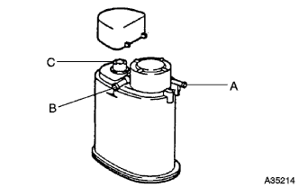

チャコール キャニスタASSY 単体点検 |
| 1. チャコール キャニスタASSY |
|  |
通気点検
マイティバックを使用して、点検要領に従って点検を行う。
| 点検要領 | 基準 |
| Bポート、Cポートを塞ぎAポートに負圧(1.96ｋPa)をかける | 漏れがないこと |
| Cポートを塞ぎ、Aポートに負圧(1.96ｋPa)をかける | Bポートより通気があること |
| Cポートを塞ぎ、Aポートに空気を吹き込む(4.71ｋPa) | Bポートより通気があること |
| Aポートに空気を吹き込む(4.71ｋPa) | Bポート、Cポートより通気があること |